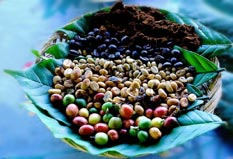

Сорта кофе из Азии и Австралии
Арабика Австралия Скай Бери (Arabica Australia Skyberry)
- Австралия Скай Бери достаточно новый сорт кофе высочайшего качества. Сорт Скай Бери происходит от знаменитого ямайского Блу Маунтейн.
И хотя Австралия - нетипичный регион для выращивания арабики, несмотря на жесткие климатические условия, Скай Бери получил наивысшие оценки экспертов.
Кофе имеет нежный, душистый аромат и яркий, насыщенный вкус с характерной, едва выраженной терпкостью.
Арабика Йемен Мокка Маттари (Arabica Yemen Mocha Mattari)
- Сказочные богатства Йемена всегда основывались на выгодной торговле наибольшими богатствами давности - кофе, специями и благовониями. Из портов этого
древнего государства семена и саженцы кофе распространились по всему миру.
- Мокка Маттари - первый сорт кофе, с которым познакомились европейцы. Лучший из йеменских сортов кофе, что собирается в северной гористой части
Йемена в районе Маттари вблизи города Сана на высоте 1000-2000 м. Это первый сорт кофе, завезенный в Россию. Именно его пили российские и европейские монархи.
Отсюда второе название этого сорта - "Кофе Лордов". Вкус кофе Мокка Маттари насыщенный, островатый, с шоколадным привкусом, аромат - тонкий, винно-фруктовый,
с дымными оттенками. Уникальная, чуть заметная кислинка придает напитку мягкий и пикантный вкус, с долгим шоколадным послевкусием.
- Уникальность этого сорта не в правильной форме зерна, а в неповторимых вкусовых и ароматических качествах, в ограниченности ареала роста
и традициях культивации (Йемен - первая страна в мире, где начали искусственно культивировать арабику).
Арабика Индия Плантейшн (Arabica India Plantation)
- Кофе высокой плотности с богатым вкусом, напоминающим черный шоколад с легкой горчинкой. Это нежный и бархатистый по вкусу и аромату кофе, чья горчинка
и крепость давно полюбились во всем мире. Нежный и богатый, слегка кисловатый, с винным привкусом индийский кофе хорошо дополняет другие сорта кофе.
Арабика Индия Монсунд Малабар (Arabica India Monsooned Malabar)
- Монсунд Малабар - самый интересный сорт индийской арабики из города Малабар, где его выращивают на небольшой ферме, помещают в жгутовые мешки и хранят в
сарае с июня по ноябрь, когда дуют муссонные ветра. Зерна от дождей набирают влагу и увеличиваются в объеме в два раза, приобретая желтовато-бронзовый цвет
(у обычного кофе он зеленый). Этот способ обработки кофе появился с развитием быстроходных кораблей. Во времена парусного мореплавания, зерна путешествовали
в течение многих недель, и за это время успевали пожелтеть и приобрести особый привкус. После того, как их путь в Европу сократился, местным жителям пришлось
прибегать к специальной «муссонной» обработке, чтобы сохранить привычный европейцам вкус и вид кофе.
- Умеренная кислотность, средняя и густая консистенция, сбалансированный сладкий вкус, приятный аромат мускатного ореха, шоколадные тона не оставят
равнодушным никого.
Арабика Непал Эверест (Arabica Nepal Everest)
- Единственный в мире кофе, растущий севернее Тропика Рака, необычная новинка с заснеженных вершин Гималаев, арабика с небольшой плантации округа Нувакот -
Непал Эверест.
- Деликатный, отлично сбалансированный вкус Непал Эверест невероятно богат. Знатоки и гурманы различают в нем легкую кислинку и одновременно благородный
горьковатый оттенок, а также необычные сладко-соленые нотки. Послевкусие несет в себе фруктово-цветочные нотки жасмина, цитрусовых, фундука, и свежего
кориандра.
- Уникальный характер этого необычайно насыщенного кофе открывает кофейным гурманам благородные ароматы какао и леденцов изменяющийся изысканными нотками
имбиря во вкусе.
Арабика Индонезия Бали
- Кофе имеет прекрасный вкус и отличное качество. Зерна такие же как и на соседних островах Ява, Тимор и Папуа-Новая Гвинея, обрабатываются влажным способом.
Настой - классический, без посторонних запахов, очень мягкий. Он характеризуется водянистой консистенцией, прекрасными вкусовыми качествами и оттенками.
- Кофе имеет изысканный вкус, сладковатый вкус, букет фруктовых, иногда лимонных или апельсиновых оттенков, цитрусов. Долгое крепкое послевкусие виски.
Арабика Индонезия Копи Лювак (Kopi Luwak)
- В Индонезии делают один из самых необычных сортов кофе в мире - «Копи Лювак» (Kopi Luwak). Этот кофе очень дорогой и чрезвычайно редкий.
- Кофейные гурманы ценят Kopi Luwak за неповторимый вкус и душистый аромат. Действительно, понюхав клапан упаковки, даже неискушенный нос почувствует богатство
и разнообразие запахов зернового кофе.
- Считается, что свой оригинальный вкус он имеет благодаря весьма необычному способу ферментации кофейного зерна и его
сбора. Процесс производства зерен кофе Копи Лювак заключается в том, что небольшие зверьки (пальмовые циветти) поедают плоды кофейного дерева (кофейные вишни),
переваривают их и экскретируют. Впоследствии эти зерна собирают и используют для приготовления кофе. Именно этим особым процессом производства кофе и объясняется
его высокая цена и редкость.
- Особая яркость вкуса кофе Копи Лювак объясняется свойствами желудочного сока зверька, в состав которого входит богатое ароматом вещество - цибетин. Кроме того,
при выборе плодов циветти пользуется не только глазами, как люди, но и носом, выбирая лучшие ягоды. Благодаря этому, зерна этого сорта превосходят по
качеству любой другой сорт.
- Божественный Копи Лювак имеет особые, выразительные черты вкуса: шоколадный аромат, деликатную горчинку, оттенок сливочного масла, нуги и меда, а также длинное
и устойчивое многочасовое послевкусие.
Арабика Индонезия Мандхелин (Arabica Indonesia Mandheling)
- В Индонезии выращивается один из лучших сортов Арабики в мире - Индонезия Мандхелинг. Крестьяне собирают кофе вручную, возвращаясь к каждому дереву несколько
раз за сезон. В корзину попадают только зрелые здоровые ягоды, которые затем обрабатываются и перебираются вручную, используя традиционные методы, что и делает этот
кофе одним из лучших и узнаваемых в мире.
- Кофе имеет изысканный пряный аромат, тонкий вкус карамели с нотками шоколада, едва заметную кислинку и долгое фруктовое послевкусие.
Арабика Индонезия Суматра (Arabica Indonesia Sumatra)
- Кофе Суматра владеет густой консистенцией и сладковатым вкусом с шоколадными нотками. Этот сорт обладает насыщенным, пряным вкусом и умеренной кислотностью. Кофе
дает приятный горьковатый настой с выраженной кислинкой.
Арабика Папуа Новая Гвинея (Arabica PNG)

- Для сотен тысяч жителей этой страны труд на кофейных плантациях - единственный источник средств существования. Занятость в кофейном производстве поощряет
правительство, которое в начале сезона сбора урожая объявляет минимальные закупочные цены на продукцию. Весь кофе в Новой Гвинее выращивают на высоте 1200 - 1800 м.
- Папуа-Новая Гвинея - экзотический и высококачественный сорт высокогорной арабики. Это культурная вариация арабики Блу Маунтейн, завезенная в Новую Гвинею с Ямайки.
- Этот сорт кофе считается одним из лучших за счет высокой консистенции и приятного сладковатого вкуса. Кофе хорошо сбалансирован, и в нем ярко проявляются
выразительные фруктовые ноты.
- Отличается хорошей консистенцией и сладковатым вкусом. Данный сорт применяют в чистом виде и в составе смесей благодаря его очень высокому качеству.
- Хорошо сбалансированный напиток средней кислотности, с ореховым запахом и приятным вкусом, терпкий, с легкой горчинкой.
Арабика Папуа-Новая Гвинея РВ (Arabica PNG PB)
- Арабика Папуа-Новая Гвинея РВ считается одним из лучших элитных мировых сортов кофе. Кофе хорошо сбалансирован, и в нем ярко проявляются выразительные
фруктовые ноты. Арабика Папуа-Новая Гвинея РВ - это вариация ямайской Арабики Блу Маунтейн, одного из самых редких и уважаемых сортов в мире кофе. Во вкусе этого кофе
чувствуется сбалансированное сочетание классического привкуса с легким ореховым ароматом и отчетливо ощутимыми фруктовыми нотами с оттенком шоколада. Зернышко Папуа-Новая
Гвинея peaberry обладает силой аромата и насыщенностью двух обычных зерен.
- Производство кофе в Папуа-Новой Гвинее составляет менее 1% мирового его производства. Однако кофе является второй по значению экпортной культурой в стране, в этой
отрасли заняты около 2,5 млн. человек.
Робуста Вьетнам (Robusta Vietnam)
- Вьетнамская Робуста дает крепкий, довольно горький и терпкий настой с немного резким ароматом. Однако для эспрессо подходит отлично, даже при минимальном обжаривании.
Этот сорт кофе наиболее часто используют в смесях.
Робуста Индия Парчмент
- Индия Парчмент имеет приятный шоколадный аромат с винными тонами, и дает горьковатый, сильно насыщенный настой, с повышенным содержанием кофеина. Послевкусие яркое,
очень длинное. Чаще всего используется для приготовления смесей.
Робуста Индия Парчмент PB (Пиберри)
- Индия Парчмент РВ имеет приятный шоколадный аромат с винными тонами, и дает горьковатый, сильно насыщенный настой, с повышенным содержанием кофеина. Зерна в форме
горошин (peaberry) придают этому сорту чрезвычайных ароматов. Ценители кофе считают его одним из лучших сортов робусты.
Робуста Индонезия Ява
- Азиатский сорт кофе, который выращивают среди тропических лесов острова Ява, Индонезия. Кофе имеет насыщенный, горько-вяжущий, терпкий вкус и ярко выраженный аромат.
Хорошо сочетается с нейтральными сортами кофе.